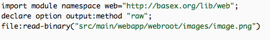

a
sneak peak
❧@☙
BaseX-Web
BaseX-Web is…
- Pure
- XML & only XML Technologies
- Lightweight
- …yet capable
- Convenient*
- produces XHTML, no conversions needed
- Servlet Implementation
- runs on top of the jetty:// web server
- EXPath Extension Module
- handles the binary dependencies
- BaseX Database Server
-
persists XML, processes XQuery
Architecture
- Model
-
Optional XQuery module →
CRUD
- View
- XQuery script-file that requests data
- Controller
- feeds data from a model to the query
Model
- returns
- XML fragments
- persistsvalidates
- XML fragments
- decouples
- data from business logic
Source
model:find-all()
model:find-by-author()
View
- calls a controller action
- that requests data from the mdoel
- renders
- XML fragments as HTML*
Rendering
Live example
Interaction
Live example
Serialization Options
Serialization example
Serving Binary

Binary
Controller
- XQuery Module
-
auto imported → view
- Gets data from the model
- as requested by the view
- Business Logic
- redirecting, condition checks etc.
Thank you.
➡ ☕